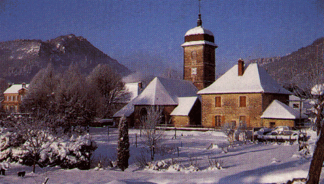
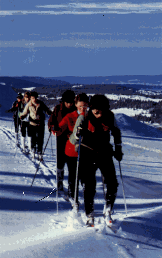

La Maison Rose
Francis Geere
11 Rue du Chateau, 25330 Nans-sous-Sainte Anne, Franche Comté, France
Telephone: +33 381 865 541
Mobile: +33 668 472 580
Welcome to
Nans–sous–Sainte Anne
This village, set in a peaceful but spectacular wooded valley at about 1,100-ft (376 m) above sea level, has the timeless atmosphere of an English country community of 50 years ago. It dozes in tranquillity for much of the time and is the perfect antidote to the stress of modern life. Happily, it is too far from any major town to be a dormitory village. It has about 140 inhabitants of whom all are pleasant and helpful even if few have much English.
The passing scene in front of La Maison Rose
|
1906 |
2006 |
Nans (for short) is a typical rural French community with as many young as elderly, and there is plenty of life throughout the summer months particularly at the activities centre/hostel and restaurants. The village is also home to foreigners of several different nationalities. They are well camouflaged!
The village has two restaurants, an outdoor activities centre, an outlet for our fine local produce, a theatre and a hall for village (and other) functions. A bread van toots its way through the village every morning (except Sundays)
What to see in Nans
The principal local sights, with means of access, are indicated on panels by the river bridges in the village. A map indicating local walks and mountain-bike possibilities is available at the outdoor activities centre. Our community website also gives some information about forthcoming local events.
The Source of the Lison
The major local attraction is the spectacle (about 20 minutes’ walk from the cottage) of the River Lison cascading fully-formed from the side of the cliff in a deep wooded gorge. This is the second largest underground river in our Jura region, and you can enter the cavern from which it emerges to gain a ledge known as the Chaire à Prêcher (the Pulpit) to observe the silently emerging river.
But the source of the River Lison is only the first of three spectacular geological phenomena in the gorge. Immediately behind and above the river’s official source is the Creux Billard (the Billiard Pocket), a deep chasm which provides a unique glimpse of the river’s erstwhile subterranean passage. Signs of Neolithic occupation have been found in a cave in its side. A cross upon a rock in the sump of the Creux commemorates a fatal fall in the 19C, but you won’t see it unless you are prepared to make a rather athletic descent into the pit to seek it out. After persistent heavy rain, a spectacular horse-tail cascade falls 80 metres from the lip of the pit in clouds of spray.
A few hundred yards’ walk away through the woods is the Grotte Sarrazine (the Monk’s Cowl Cavern) which, overhung by a precipitous wooded cliff, forms a gigantic natural porch almost 300 feet high and hosts falcons. Its usually dry cavern permits access with a torch, but after heavy rain the source, fed by a derivative of the Lison, flows copiously.
These unusual sights all merit two stars in the Green Michelin guide and attract many visitors to the village, particularly on summer Sundays.
The Verneau
But such caves and water sources are not uncommon in the region. Indeed, there are more around the village, including that which provides the stream that passes the end of my garden. This is the Verneau whose source is only a 10-minute walk away up in the cliffs behind the cottage. But what adventures the stream experiences in that short distance! Its waterfalls and other little cascades are particularly spectacular after rainfall and form a veritable adventure playground for children.
Its grotto is the gateway to a pitch-dark 25 km network of features served by numerous potholes on the plateau above. Read more about this below.
The Taillanderie
The village has much else of interest, but let me start with its other Michelin 2-star feature, the Taillanderie, designated a National Monument. Coach parties come from as far as Paris to visit this example (now a museum) of the early industrial revolution in France. The factory, dating from the early 19th century and powered solely by water via two enormous water wheels, forged scythe blades and was very successful. It ceased production only in the late 1960s but is still started up for visitors today: an impressive experience .
The Taillanderie – Inside and out
Behind the cottage on the way up to the source of the Verneau is a tall square building that once served as a mill for the village. Amongst other things, pottery of a very high standard was produced there from 1833 until 1929. The mill has been converted to residential use but what remains of the original interior is worth seeing if you can make a personal arrangement to do so. One of the principal features of the pottery of Nans was its pink rim. Although the quality of the product was good enough to serve even for Louis Pasteur's table, its high value in the antiques market today is attributable largely to its scarcity.
History, castles and stuff
‘ Nans’ is said to come from a Celtic word for a valley: very apt in this case, as the surrounding cliffs at one point hover more than 1,000 ft (330m) over the village. Nans-sous-Sainte Anne is situated at a river crossing on the ancient salt trade route that led eastward from the UNESCO-recognised salt mines in nearby Salins-les-Bains towards Basle and Germany. The route, established in the mists of distant time whenever the qualities of salt were first valued and traded, is still very walkable though, in places, you could confuse the old Celtic track with its more modern Roman revision! Here and there wheel ruts can still be seen where they were cut in its road-bed.
But the recorded history of the village begins in the 13th century with the establishment of a castle by the Montrichard family, presumably to be able to levy a salt tax. That castle, originally nestling in the shadow of the gorge of the Verneau, was rebuilt more prominently and photogenically in the 16th century three doors up from the Maison Rose, and is now known as the Chateau Mirabeau.
Why ‘Mirabeau’? In 1776 the c hâteau was the summer residence of the 75 year old Marquis de Monnier , president of the Audit Office in Pontarlier . His 20 year old wife, Sophie de Ruffey, with meagre dowry, had preferred this marriage of convenience to the alternative: life in a convent. Mirabeau , who later became prominent as a Monarchist in the French Revolution, was a prisoner/debtor in the Château de Joux near Pontarlier at the time. Allowed a certain measure of freedom, he befriended the Monniers , and the inevitable happened. The affair was discovered and Mirabeau was forced to flee. Sophie departed too, but in more romantic fashion. At nightfall, dressed as a man, she made her way into the gardens, climbed over the wall by pre-positioned ladder, mounted a waiting horse and, riding like the wind, met Mirabeau at the Swiss frontier. A sum of 10,000 livres, purloined from the old man over a period of time, had been transferred to Switzerland ahead of the couple. The court at Pontarlier , unmoved by the romantic aspects of the case, condemned the seducer, in absentia, to death, and the wife to a nun’s habit. Arrested in Amsterdam, the fugitives were extradited to France. Mirabeau managed to retain his head but was ordered to make amends to the wronged Marquis. The romance of Nans was over and Sophie , depending upon which story you prefer to believe, either committed suicide or chose the convent. Mirabeau subsequently featured in the upheavals of the French Revolution, but died in bed! Today, the Château is owned by a consortium of antiques dealers. Alas, it cannot be visited.
Nans-sous-Sainte Anne means ‘the Valley below St Anne’. So who or what was Saint Anne? In this case she was a castle, built during the period of Spanish rule in the 16th century on a rocky spur 1,000 ft (330m) above the village, presumably also to tax the salt trade.
La Maison Rose facing the heights of Sainte Anne
When Louis XIV forcibly attached Franche Comté to France in 1674 he immediately ordered such castles destroyed. Today the walk up to the ridge where the castle stood is well worth the effort for the superb view of the village, for a sight of the castle’s few remains, indeed, merely for the exercise! Alternatively, the site of the château can be reached by car and on foot without an energetic climb by driving up to the hamlet of Sainte Anne via Crouzet Migette. On the way up to the latter you pass the domaine of Migette with its remnants of a convent for spare daughters of the nobility. Established in the 12th century, and demolished, like so many other religious establishments, in the aftermath of the 1789 revolution it is said, shortly before its destruction, to have witnessed the death of the daughter of 'Bonnie' Prince Charles Edward Stewart, thus ending the direct royal Stewart line.
What is there to do in Nans?
You may already have gathered that those who come to stay in the village are attracted not only by its ambiance and sights. The area is ideally placed for a range of outdoor activity, not to mention motor touring and gastronomy. (A note about eating: you may like to know that there are 2 restaurants in the village itself as well as refectory meals at the Lison Accueil village activities centre).
Younger visitors are attracted by the caving, canyoning and climbing facilities, but walking and fishing are probably more popular among older visitors. Nans is also a handy base for hang- and para-gliding, riding, cycling, canoeing and, given enough winter snow, cross-country-ski-ing. There are adventure parks, tennis and swimming facilities (river, pool and lake) nearby. And there are 5 golf courses within an hour's drive of the village.
Local walking paths are occasionally a bit steep but never of more than moderate difficulty (or muddier than in the UK!). Nans lies on GR59 of the national network of Grandes Randonnées (long-distance footpaths). The route takes you 6 miles (10 km) down the impressive canyon of the river Lison where you may well not see another soul all day. Indeed, one can walk similarly for miles in any direction. There are five accessible B elvédères (view points) giving spectacular views over the village and the Lison gorge. One such is from the ridge of the remains of the Château of Sainte Anne. Another rather strenuous (but rewarding) walk takes you one-and-a-half hours up more than 1,400 ft (430 m) from the cottage to Montmahoux (Holly Mountain) whence the views (including of Mont Blanc, 100 miles or 160 km away) on the right day cover 360 degrees and are stunning. To cover all of the Belvédères in one day is perfectly feasible for the fit. It involves a 13 mile (22km) walk and about 2,200 feet (700 m) in total of ‘Up’. I lead such a walk every 14th of July!
And I should also mention that the local Canton organises a regular annual programme of summer weekend walks which would enable you to discover some of the less well-known local points of interest in the company of convivial and knowledgeable local walkers. You will find a copy of the programme in your apartment.
Those interested in the ecological make-up of the valley will find an analysis of its diversity at the French-language Natura 2000 web-site. It reveals that, amongst many other things, 50% of the valley is forested, mostly with beech, but also with pine.
Fishing is a popular local pastime, the trout and grayling being much sought after. A family of the latter occupies a pool in the Verneau stream at the end of my garden, but they are officially off-limits! A daily or weekly permit, as well as tackle, can be obtained without difficulty in season (March-September).
Caving and Canyoning are particularly convenient from Nans. There are more than 30 possibilities in the area. Perhaps the best-known are the Verneau system and the Grotte de Chauveroche (at nearby Ornans). The former is a 16 mile (25km) network to which the Verneau (the little stream that passes the end of my garden) provides access. It is said to be the 6th most extensive system in France and the 6th longest A to B system in Europe. It is accessible by a short walk from the village activities centre where guides and equipment are available by arrangement.
Bibliography: Spéléo Sportive dans le Jura Franc-Comtois by Yves Aucant and Jean-Claude Frachon (Publ.: ÉDISUD), and
Spéléologie en Franche-Comté Topoguide 1 by Yves Aucant, Jean-Claude Frachon, and Claude Scmitt (Publ.: Édition SHAG-SCJ)
.
In 2002 a fixed climbing route (Via Ferrata) was created along the cliffs above the cottage. This has proved a great success with younger visitors to the village. You will be able either to join them, using the activities centre equipment, or just sit with binoculars and/or glass of wine and watch them from my Loft apartment! There is another Via Ferrata 20 minutes away at Ornans, and there are other pure climbing possibilities in the area.
The cliff-face route of the Via Ferrata behind the Maison Rose
The village activities centre sometimes has equipment for canoeing, but you may prefer to indulge in this sport in the valley of the River Loue valley 20 minutes away where the facilities are more organised. Facilities, equipment and tuition (as appropriate) for cycling, horse-riding, donkey-riding, hang- and para-gliding, and cross-country ski-ing, are all available within 15 minutes’ drive of Nans.
For the young, there are also tree-top rope- and walk-way adventure parks at Salins-les-Bains and at Ornans nearby.

Seasonal views in front of the Maison Rose
When there is snow the nearest prepared cross-country ski-ing trails are just 10 minutes away by car. But you can ski cross-country virtually anywhere at all. The countryside is all yours!
The nearest notable downhill ski-ing resort is at Métabief about 45 minutes’ drive away towards Lausanne . I often go to Les Rousses ( an hour away towards Geneva) where the network of pistes connects with others in neighbouring Switzerland and you can actually ski across the border!
Equipment is readily available for hire at the resorts and is less costly than at the grander Alpine resorts (some of which are also reasonably accessible) .

In the Haut-Jura (High Jura), some 45 minutes from Nans
On other Pages:
Introduction The Accommodation The Surroundings Food and Drink How to Find Nans